Die Workflow Liste, welche über den Menüpunkt…
1 WinLine INFO
1 CRM
1 Workflow Liste
… aufgerufen werden kann, bietet eine Übersicht aller Workflowschritte und ist in die folgenden Register unterteilt:
ü WF-Schritte
ü Folgeaktionen
Register "WF-Schritte"
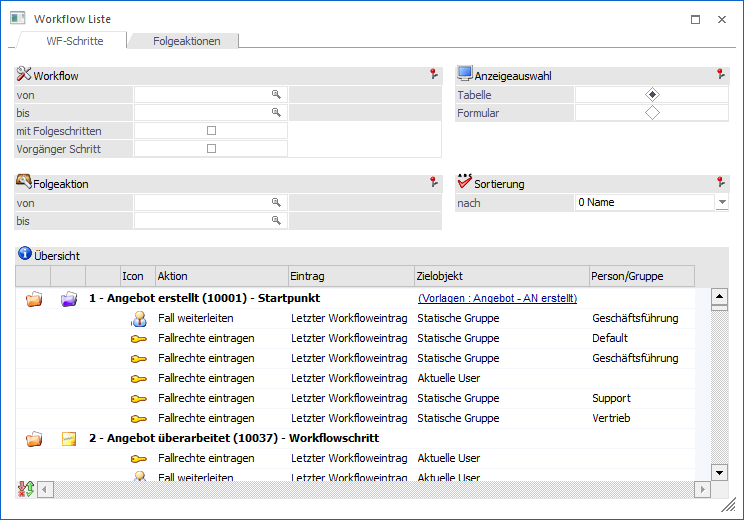
In dem Register "WF-Schritte" kann eine Übersicht aller CRM-Schritte ausgegeben werden. Zusätzlich erfolgt pro Schritt die Ausweisung der hinterlegten Folgeaktionen oder der möglichen Folgeschritte.
Workflow
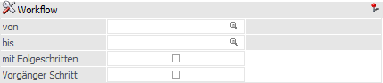
Ø Workflow von / bis
An dieser Stelle kann auf die Gruppen, Startpunkte, Workflowschritte oder Aktionsschritte eingeschränkt werden, welche in der Workflowanzeige dargestellt werden sollen.
Ø mit Folgeschritten
Wird die Option "mit Folgeschritt" aktiviert, dann werden die Workflows mit deren Folgeschritten angezeigt. Ansonsten werden die Workflows mit deren Folgeaktionen dargestellt.
Ø Vorgänger Schritt
Wird die Option "Vorgänger Schritt" aktiviert, dann werden die Workflows mit deren Vorschritten angezeigt. Ansonsten werden die Workflows mit deren Folgeaktionen dargestellt.
Hinweis
Die Option kann nur genutzt werden, wenn in den Selektionsfeldern "Workflow von / bis" eine Eingabe getätigt wurde.
Folgeaktion
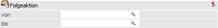
Ø Folgeaktion von / bis
An dieser Stelle können die Folgeaktionen selektiert werden. In diesem Fall werden auch nur Workflows in der Workflowanzeige dargestellt, welche die ausgewählten Aktionen enthalten.
Anzeigenauswahl
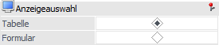
Ø Anzeigenauswahl
In dem Bereich "Anzeigenauswahl" kann definiert werden, wie die Workflowanzeige dargestellt werden soll. Hierbei stehen eine Tabellenansicht und eine Formularansicht zur Verfügung.
Sortierung
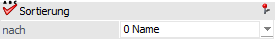
Ø Sortierung nach…
An dieser Stelle kann eingestellt werden, wie die Workflowanzeige sortiert werden soll. Es stehen folgende Varianten zur Verfügung:
ü 0 - Name (Name des Workflows)
ü 1 - Workflow Nr.
Übersicht
In der Workflowanzeige werden gemäß der Selektion die Workflows mit deren Folgeaktionen oder die Workflows mit deren Folge- bzw. Vorschritten angezeigt. Die Ausgabe erfolgt hierbei in Form einer Tabelle oder eines Formulars.
ü Tabelle
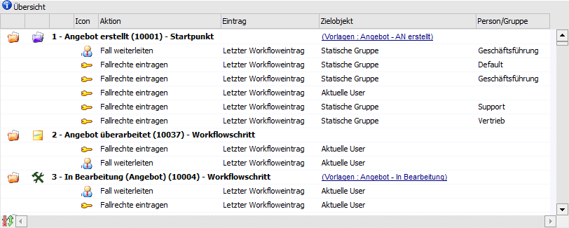
ü Formular
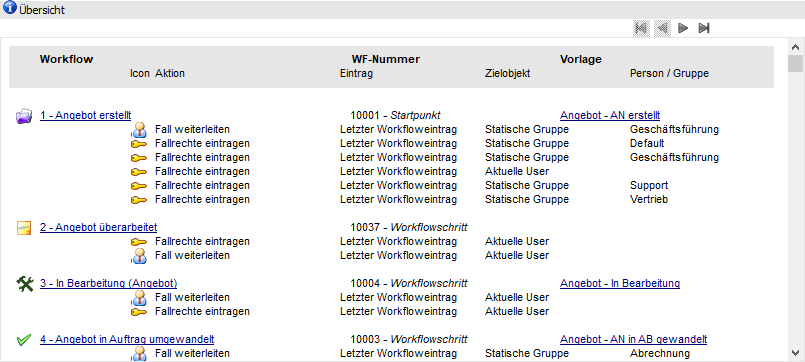
Ø  VCR-Buttons (nur bei Formularansicht
VCR-Buttons (nur bei Formularansicht
Sollte die Anzeige über mehrere Seiten dargestellt werden, dann kann mit Hilfe der VCR-Buttons zwischen den einzelnen Seiten gewechselt werden.
Register "Folgeaktionen"
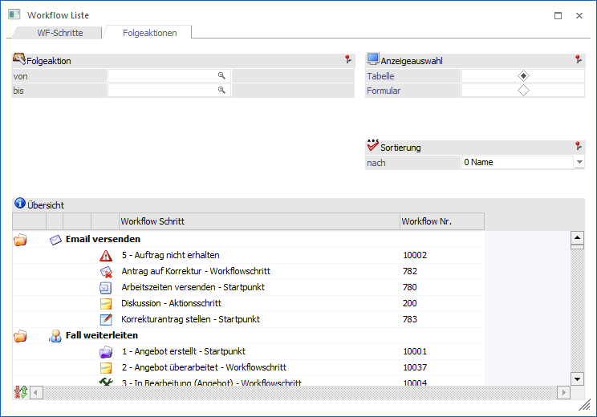
In dem Register "Folgeaktionen" können die Folgeaktionen und die Workflowschritte, in denen diese vorkommen, angezeigt werden.
Folgeaktion
Ø Folgeaktion von / bis
An dieser Stelle können die Folgeaktionen selektiert werden.
Anzeigenauswahl
Ø Anzeigenauswahl
In dem Bereich "Anzeigenauswahl" kann definiert werden, wie die Aktionsanzeige dargestellt werden soll. Hierbei stehen eine Tabellenansicht und eine Formularansicht zur Verfügung.
Sortierung
Ø Sortierung nach…
An dieser Stelle kann eingestellt werden, wie die Workflows (innerhalb einer Aktion) in der Aktionsanzeige sortiert werden sollen. Es stehen folgende Varianten zur Verfügung:
ü 0 - Name (Name des Workflows)
ü 1 - Workflow Nr.
Aktionsanzeige
In der Aktionsanzeige werden gemäß der Selektion die Aktionen und die Workflows, in denen diese vorkommen, angezeigt. Die Ausgabe erfolgt hierbei in Form einer Tabelle oder eines Formulars.
ü Tabelle
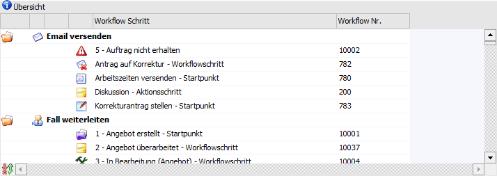
ü Formular
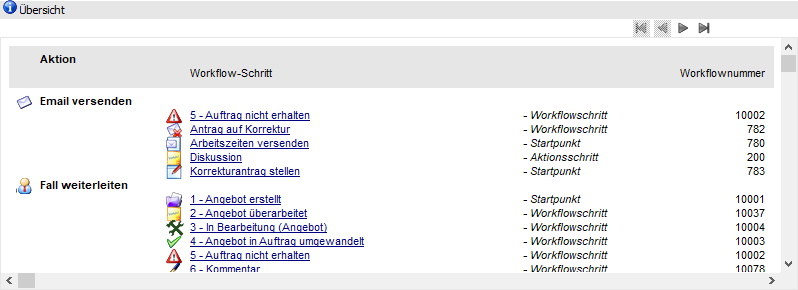
Ø VCR-Buttons (nur bei Formularansicht
Sollte die Anzeige über mehrere Seiten dargestellt werden, dann kann mit Hilfe der VCR-Buttons zwischen den einzelnen Seiten gewechselt werden.
Tabellenbuttons (nur bei Tabellenansicht)
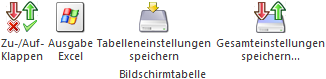
Ø Zu-/Aufklappen
Mit Hilfe dieses Buttons werden alle Workflow- bzw. Folgeaktionsbereiche geschlossen bzw. geöffnet.
Ø Ausgabe Excel
Durch Anwahl des Buttons "Ausgabe Excel" wird der Inhalt der Tabelle an Microsoft Excel übergeben.
Ø Tabelleneinstellungen speichern
Die Spalten einer Tabelle können grundsätzlich an beliebige Positionen verschoben, bzw. in der Breite entsprechend angepasst werden. Durch Anwahl des Buttons "Tabelleneinstellungen speichern" werden die Einstellungen benutzerspezifisch gespeichert und bei dem nächsten Aufruf des Programmpunktes wieder vorgeschlagen.
Ø Gesamteinstellungen speichern
Im Gegensatz zu "Tabelleneinstellungen speichern" können mit "Gesamteinstellungen speichern" mehrere Tabellenaufbauten gespeichert und nach Wunsch geladen werden. Zusätzlich werden Sonderfunktionen der Tabelle (z.B. "Spalte gruppieren") ebenfalls bei der Speicherung bedacht.
Buttons
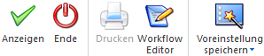
Ø Anzeigen
Durch Anwahl des Buttons "Anzeigen" bzw. F5. wird die Workflow- bzw. Folgeaktionsanzeige gefüllt.
Ø Ende
Mit Hilfe des Buttons "Ende" bzw. der Taste ESC wird das Fenster geschlossen.
Ø Drucken (nur bei Formularansicht)
Bei Anwahl des Buttons "Drucken" wird die Workflow- bzw. Aktionsanzeige ausgedruckt.
Ø Workflow Editor (nur bei Tabellenansicht)
Durch Anwahl des Buttons "Workflow Editor" wird der markierte Workflow im Workflow Editor zur Bearbeitung geöffnet.
Ø Voreinstellung speichern
Durch Anwahl dieses Buttons erfolgt eine benutzerspezifische Speicherung aller im Fenster getätigten Einstellungen. Diese sogenannten "Voreinstellungen" können jederzeit wieder abgerufen werden und ermöglichen dadurch ein schnelleres und zielorientierteres Arbeiten (nähere Informationen entnehmen Sie bitte dem Kapitel "Die Voreinstellungen").